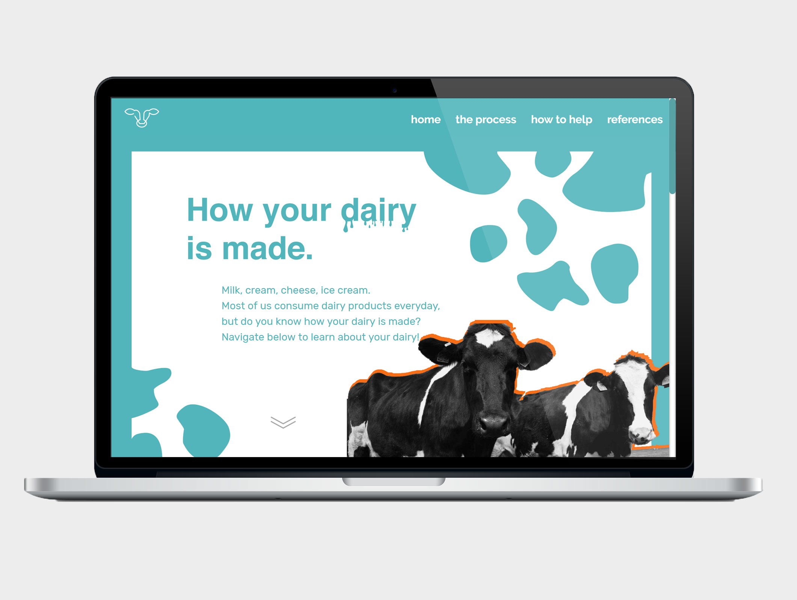
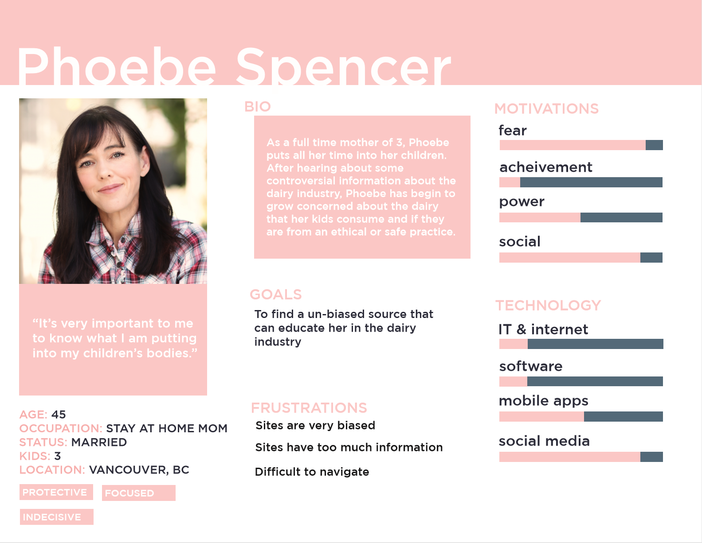
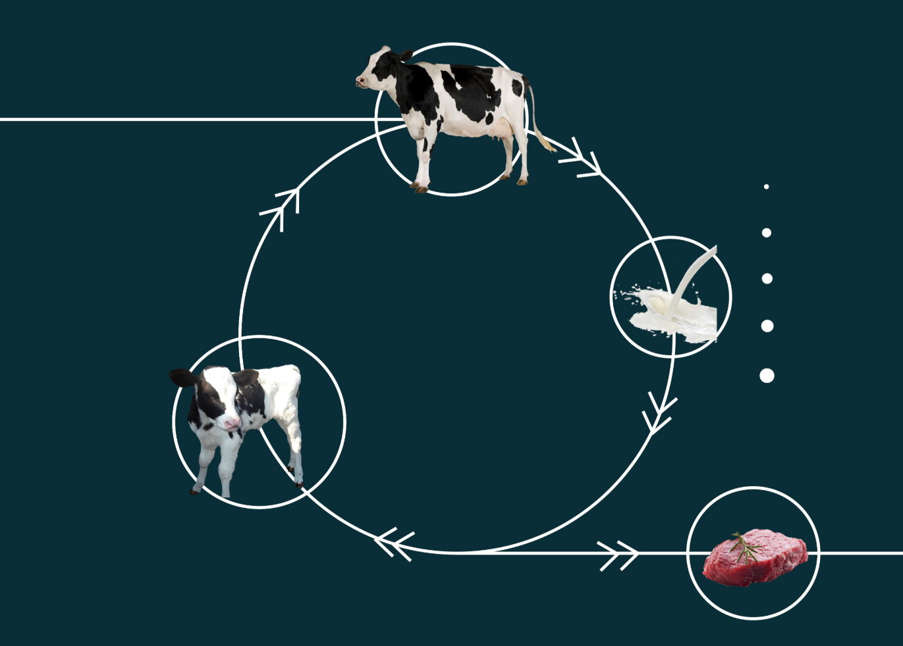

How Your Dairy is Made
Description
IAT 235 is a second-year program that introduces the theory and practice of designing visual representations of information. The final assignment is an educational website with the purpose to be informative, visually pleasing, easy to navigate, and responsive on large screens.
My teammate and I chose the topic of the current dairy industry and the exploitation of cows. However, part of the challenge was to keep everything i nformative and unbiased as opposed to attacking the industry. View the site here.
Audience
The audience our site aimed to attract are ordinary people who don’t need to learn how to read scholarly articles while still being concerned about where their food came from. Below is a persona that I created to help the team understand what we wanted to achieve:
To achieve this, the site had to be easy to navigate, clear, and not filled with complicated wording and graphs. Wording and graphs had to be simplified and easy for follow, in order to create content that everyone can understand in a small amount of time in order to not lose their focus.
Art Direction
Unlike most educational sites that are filled with paragraphs and paragraphs of dull information, my teammate and I had to strategize a way to keep the site interesting while being able to educate the user. To achieve this, we had to find a visual style that was unique. One of the biggest inspirations of the site’s visual design is https://umwelt-schweiz.ch/de. My teammate and I took inspiration from the site's mix of real photographs and flat graphics.
At first, we chose a monochromatic colour scheme. However, we realized we needed to add a brighter and distinct colour to use to emphasize things:

Information Design
The biggest challenge of the site was designing an infographic that represented the process of the dairy industry both accurately and visually pleasing. Our first attempt was a simple circle cycle, however, we underestimate the complexity of the process and failed to make sense with the initial graph.
We realized we had to completely abandon the old design and rethink the process. Previously, we were being restricted with the idea of the graph having to be a cycle. Having broken free from that, we were able to come up with a much more dynamic infographic.

Reflection
This project was my first experience with developing and designing a website. It has taught me tools such as HTML, CSS, JS, and Axure as well as skills such as information design. From this assignment, I learned the importance of it. If I could do anything differently, it would definitely be to consider responsivebility of the site more and to implement a mobile version as well.